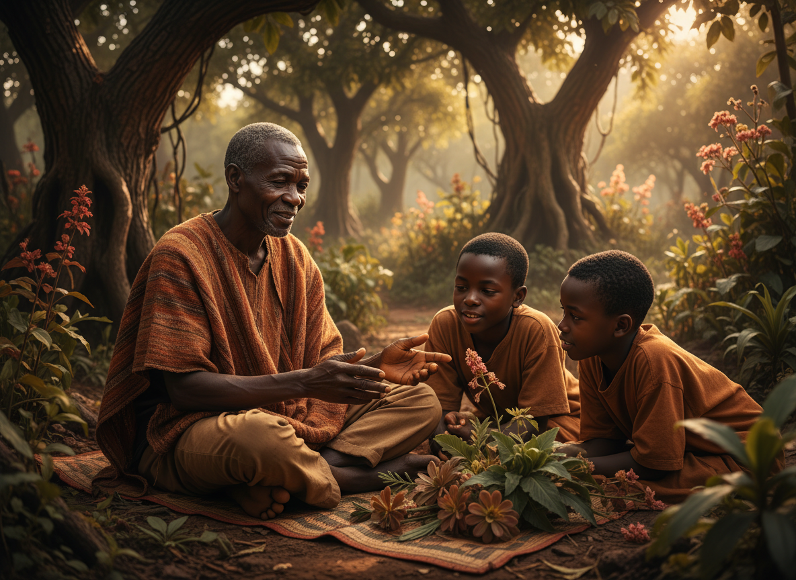
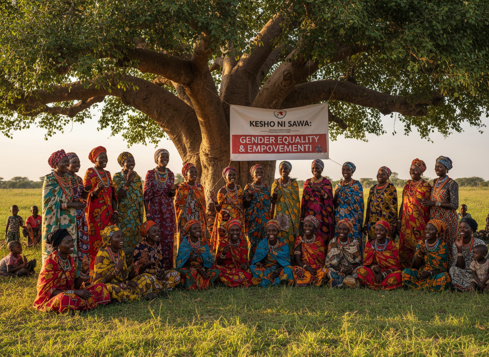
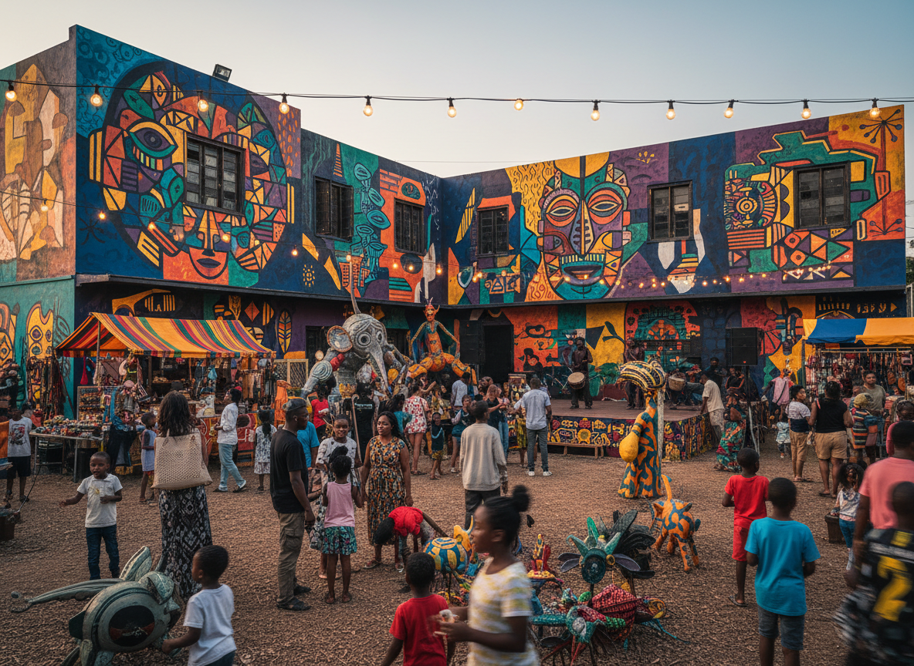

Biocultural Restoration
Biocultural restoration is the practice of healing both nature and culture together.
Explore
We work across four interconnected pillars, each strengthening the others to create holistic, lasting impact.
Each pillar strengthens the others to create holistic, lasting change.

Biocultural restoration is the practice of healing both nature and culture together.
Explore
Promoting fairness, justice, and equal opportunities for all individuals in society.
Explore
Sustainable farming practices that nourish communities and contribute to climate resilience.
Explore
Embracing cultural heritage and artistic innovation to drive social change across the continent.
ExploreWe use a combination of traditional and modern methods to create lasting change.
Integrating traditional ecological knowledge held by indigenous communities into restoration efforts.
Local communities actively map natural and cultural features, sacred sites, and restoration areas.
Promoting agroforestry and indigenous farming to enhance biodiversity and food security.
Preserving sacred sites, historical landmarks, and traditional cultural practices.
Empowering communities through collaborative decision-making and shared responsibility.
Ensuring traditional ecological knowledge and values are passed from elders to younger generations.
Your contribution directly supports community-led restoration and empowerment projects across Africa.